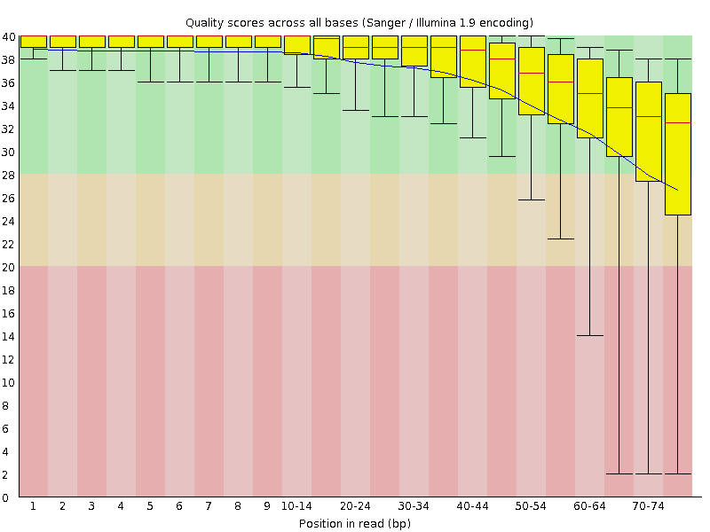
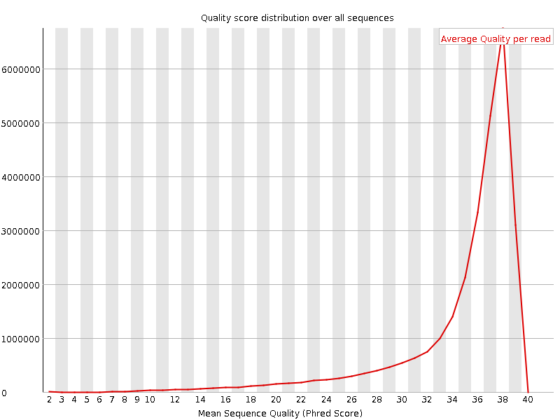
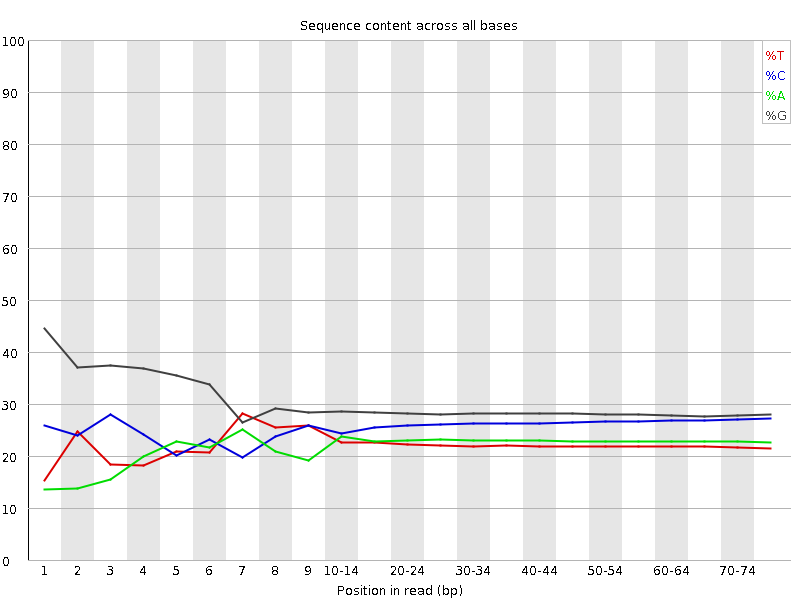
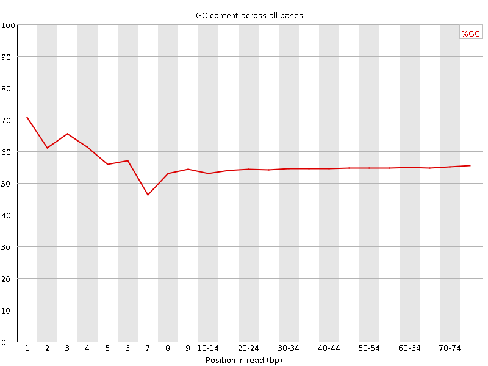
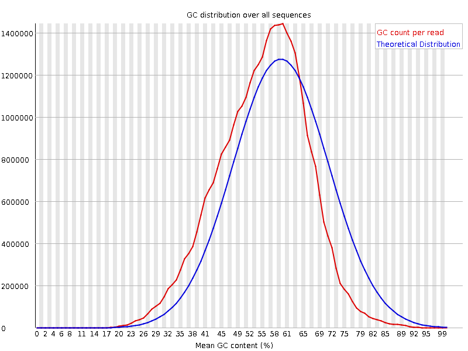
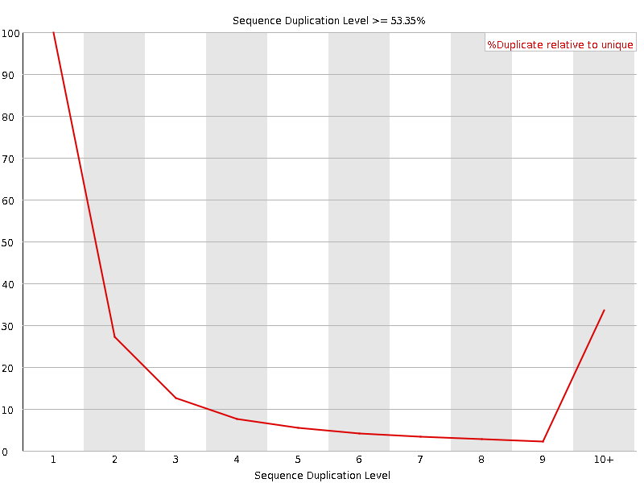
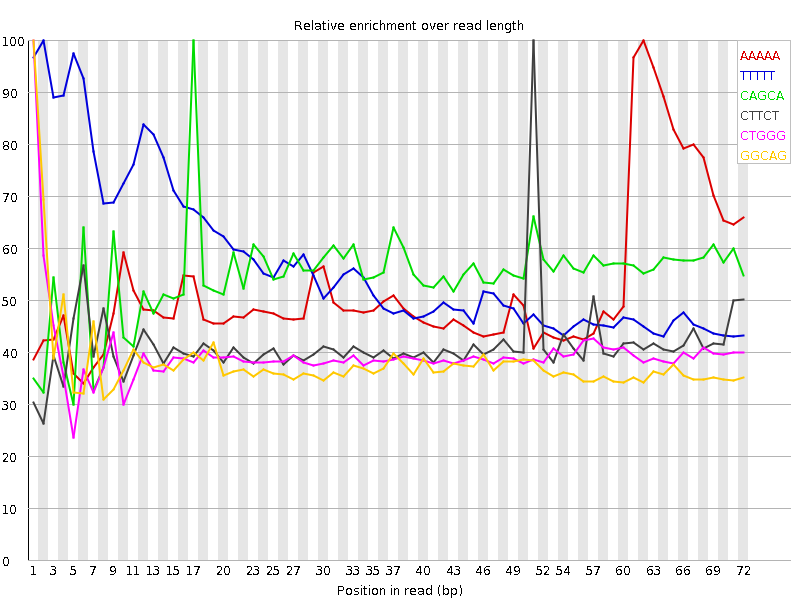

![[OK]](Icons/tick.png) Basic Statistics
Basic Statistics
| Measure | Value |
|---|---|
| Filename | SRR307916_1.fastq |
| File type | Conventional base calls |
| Encoding | Sanger / Illumina 1.9 |
| Total Sequences | 28534567 |
| Filtered Sequences | 0 |
| Sequence length | 76 |
| %GC | 55 |
Per base sequence quality

Per sequence quality scores

![[FAIL]](Icons/error.png) Per base sequence content
Per base sequence content

Per base GC content

![[WARN]](Icons/warning.png) Per sequence GC content
Per sequence GC content

Per base N content

Sequence Length Distribution

Sequence Duplication Levels

Overrepresented sequences
| Sequence | Count | Percentage | Possible Source |
|---|---|---|---|
| GATCGGAAGAGCGGTTCAGCAGGAATGCCGAGACCGATATCGTATGCCGT | 44887 | 0.15730745099443774 | Illumina Paired End PCR Primer 2 (98% over 50bp) |
Kmer Content

| Sequence | Count | Obs/Exp Overall | Obs/Exp Max | Max Obs/Exp Position |
|---|---|---|---|---|
| AAAAA | 4928590 | 3.9981415 | 7.6628456 | 62 |
| TTTTT | 3287800 | 2.9894748 | 5.218226 | 2 |
| CAGCA | 6181330 | 2.9535005 | 5.394396 | 17 |
| CTTCT | 3721955 | 2.4348862 | 5.870207 | 51 |
| CTGGG | 6411750 | 2.2094421 | 5.562757 | 1 |
| GGCAG | 6487845 | 2.1852226 | 5.7298517 | 1 |
| TCTTC | 3314570 | 2.168377 | 5.6172504 | 50 |
| GAAGA | 3545395 | 1.7593818 | 5.25414 | 6 |
| GTGGG | 4426305 | 1.3746986 | 6.2458277 | 1 |
| GGGGA | 4463960 | 1.3551135 | 6.092565 | 1 |
| GGGGG | 5480590 | 1.3012558 | 5.992159 | 1 |
| GGGGT | 3777795 | 1.1732879 | 5.0683317 | 3 |